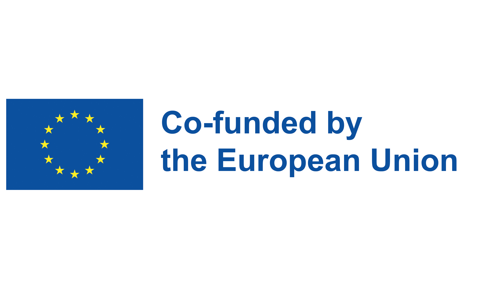

6G Security
- Pillar 1 - Blockchain-enabled Authentication in B5G/6G Network
- Pillar 2 - Secure Federated Learning
- HORIZON-101139285: NATWORK
Industrial Internet of Things Security
- Safeguarding Industrial Internet of Things Authentication
- EKOP-24-4-2: Postdoctoral Research Scholarship
Thematic Excellence Program
- Developing Secure Data Validators
- TKP2020-NKA-06: Hungarian National Challenges - Cybersecurity Subprogramme
Secure Navigation
- Developing Secure Galileo Navigation Authentication Protocol
- 2019-1.3-KK-2019: Software and Data-Intensive Services project
Lightweight Cryptography
- Developing lightweight attribute based encryption for smart IoT devices
- ÚNKP-22-4: Research Scholarship for Doctoral Candidates
Distributed Security
- Developing secure protocols for distributed environment
- ÚNKP-21-3: Research Scholarship for Doctoral students
Autonomous Vehicle Control
- Developing lightweight cryptographic protocols
- VEKOP-16-2017: Talent Management in Autonomous Vehicle Control
Smart Platform for Digital Networks
- Developing Secure SDN for Cyber Physical Systems
- 02P17D022: Collaborative smart contracting platform for digital value creation networks
Secure Cryptographic Protocols
- Developing secure cryptographic protocols
- EFOP-3.6.2: Innovations in Informatics and infocommunication
